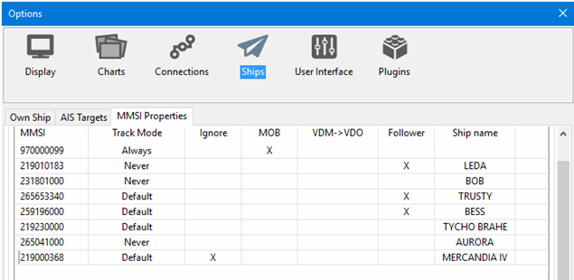
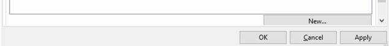
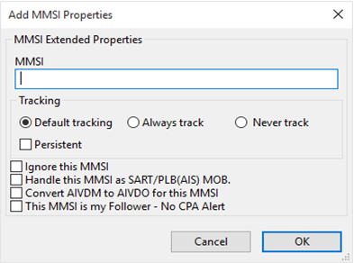
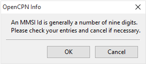

MMSI Properties
Maritime Mobile Service Identifier (MMSI) is a number identifying a ship in communication. MMSI consists of nine digits. All VHF units using Digital Selective Call (DSC), are programmed with the vessels MMSI. The same applies for AIS and EPIRBs. For more about MMSI from Miltech
MMSI numbers, individual targets, can be handled in a few preset ways. Below we have set 970000099 as an MMSI that should be tracked as a MOB. The number could for example belong to a crew member’s Personal Locator Beacon.
Several MMSI IDs below are set to never show their tracks. This can be used on frequent targets in your neighborhood, like ferries etc. The MMSI 219000368 is set to never be shown. Be aware that neither this target nor its track will ever be seen on your screen.
The MMSI 219010183 is set as “Follower”. This is a buddy and no AIS Alert is shown. The "MMSI Properties" popup becomes available when right-clicking. Doubleclicking on the MMSI bypasses the popup an takes you directly to the Properties edit dialog.
 
Add a new target to track

MMSI:
Enter the MMSI number that the new action should apply to.
Note: An MMSI Id used to be nine digits. A warning message will be shown if the entry is more or less.

If you for some reason, wish to save a non-nine-digit number click "OK", otherwise “Cancel” will take you back to edit the number.
MMSI Tracking
Default tracking
This is the normal tracking controlled by Options→Ships "OwnShip" and "AIS Targets" tabs.
Always track and Never track
The MMSI Properties dialog allows one to preset the tracking behavior of a particular MMSI target, even if the target is not presently visible. Always track a friend or a ship you are interested in. Ignore that ferry that just clutters your screen. Just a few examples.
Handle this MMSI as SART/PLB MOB.
With this setting a MOB from your Ownship will be signaled immediately. Special Search and Rescue Transponders, SARTs, are now available, using the AIS system. Personal Locator Beacons transmitting on the AIS frequencies are also available. These are sometimes called Personal AIS MOB Devices. Don’t confuse these with the more common personal EPIRB, that cannot be tracked by OpenCPN.
Entering the the MMSI number makes it possible to use these devices as an onboard emergency MOB tracking system. Setting off a device alarms all vessels that can receive the signal but it tells you that this emergency is directly related to your vessel. OpenCPN will now treat this MMSI as a standard MOB. Read more Man OverBoard .
The alarm is entered in Options → Ships→ AIS Targets →"Play Sound on CPA/TCPA and DSC/SART emergencies." Have a look at AIS ais_targets to see how OpenCPN reacts to an alarm.
Convert AIVDM to AIVDO for this MMSI
-
AIVDM NMEA 0183 sentence → AIS position reports from other vessels
-
AIVDO NMEA 0183 sentence → AIS position reports from own vessel
With this setting you might use every AIS target as if it is your own ship. An incoming AIVDM message is converted to an AIVDO message and then used to update the own-ship data. Not meant to be used for navigating, but could be used from ashore to follow a target as if you where onboard of that vessel.
Don’t use this if you have also a GPS attached, and don’t convert more then one target at a time, as your own-ship will start jumping between different positions.
This MMSI is my follower – No CPA Alert
When this option is active no AIS Alert will be shown for that target. This can be used for a buddy sailing close to you and you don’t wont a CPA alert message for that target but still for other ships coming too close.
The reason to call the MMSI properties "Follower" was to avoid confusion with the VHF DSC BUDDY which uses Buddy MMSI entered into DSC/VHF resulting in a nmea0183 data stream. The "Follower" function allows suppression of CPA alarms for a boat following the same track when e.g. cruising together.
Ships name
The Ship name connected to a MMSI ID will be added to the list once the new ID is saved or edited. The ship name is automatically printed provided that the actual ship is present on screen or has previously been and was saved in the AIS ship name file. In either case the ship name will be added first time the boat is present in OpenCPN.